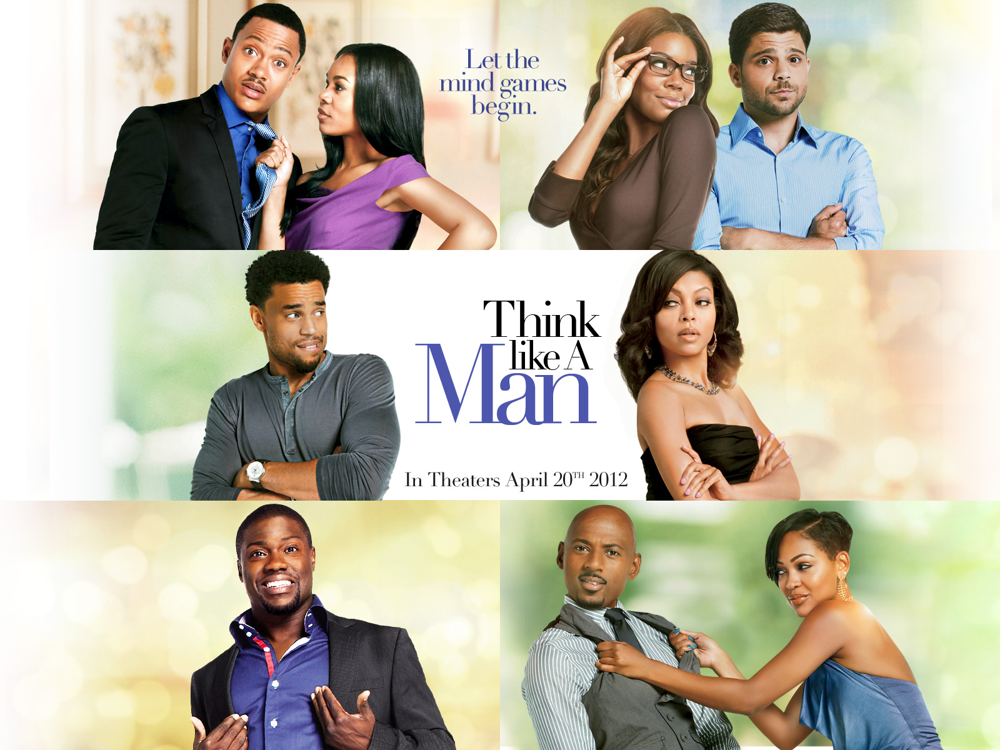

Think Like a Man (2012)
Directed by Tim Story
About the Film

Think Like a Man is based on Steve Harvey's bestselling relationship guide Act Like a Lady, Think Like a Man. The film follows four couples as the women in their lives begin using Harvey's relationship advice to gain the upper hand. When the men discover the book and its strategies, they decide to turn the tables — leading to a hilarious battle of wits between the sexes.
Why I Love It
This film is genuinely funny and warm at the same time. It has a great ensemble cast with real chemistry, and the different relationship dynamics keep the story moving at a great pace. More than just a comedy, it offers some honest and relatable observations about how men and women communicate — or fail to.
It is the kind of film you can watch with a group and everyone will find at least one couple they relate to. That universality is what makes it a favourite.
Key Details
- Release year: 2012
- Genre: Romantic Comedy
- Runtime: 122 minutes
- Starring: Michael Ealy, Jerry Ferrara, Meagan Good, Regina Hall, Kevin Hart
- Based on: The book by Steve Harvey
- My rating: 9/10
Memorable Quote
"A man's got to have a plan. Without a plan, you've got nothing."
— Zeke